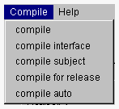

| |
プロジェクトマネージャの の Compile メニューには、compile、compile interface、compile subject、compile for release、compile auto のメニュー項目があります。

| compile | OZクラスをコンパイルします。 | ||
| compile interface | OZクラスのインタフェースをコンパイルします。 | ||
| compile subject | サブジェクトをコンパイルします。 | ||
| compile for release | リリース用コンパイルを行いリリースパッケージを作成します。 | ||
| compile auto | 自動コンパイルを行います。 |
| |